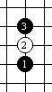
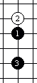
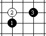
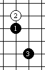

五子棋开局速记有办法
#1 五子棋开局速记有办法 作者：有志青年 发表时间：2008-4-26 11:50:11
首先知道：
星：是在一条线，隔一条线
月：是要么在一线紧挨着，要么也不挨也不在一线
寒星：你看，明亮的心外紧包着黑云，多让人寒心呀 ！（注意：把黑子看成是乌云，把白子看成是月亮）

疏星：黑1与3在田字格的对角线，想一想，田地里长着稀疏的禾苗，远远相离，多象天上稀疏的星星呀 ! 
金星：黑子1与3与白子2 成一个日字，成马步，三个子成日三角形状，日不就是太阳吗? 没听说过金色的阳光吗？星星象太阳一样明亮，不是金星吗？ 
瑞星：黑三与寒星的黑三相对称。你想：在寒冷的冬天，天上的星星也是寒冷的，但是今年天降大雪，瑞雪着兆丰年嘛！把寒星第三黑子拿到黑一的下边隔一行，就是瑞星。瑞星象征吉祥之星，是国际比赛中常见的指定开局之一，世界杯比赛中，瑞星开局的黑胜率为51％到60.9％。

以上是直止开局十二种“四星八月”中的“四星”，可以记以下口 诀：
直 止 开 局 有 何 难 ?
四 星 八 月 掌 上 玩。
寒 疏 金 瑞 是 四 星，
隔 河 还 是 一 条 线。
下面是直止开局十二种的“四星八月”中的“八月”：
花月：名字很好听，你看，月亮下两个黑影在窃窃私语，这不是花前月下吗？那两个黑影还斜着（以区别云月与雨月，拿两个是横着的）。 
雨月：月亮被乌云挡住了，不是要下雨了吗？ 
松月： 晚上，月亮高挂，松树静静的站着。皓月当空，正在正中，因此松树的影子就在自己的脚下。 
残月：黑1与黑3呈桂马，就是一个马步（日字型）黑子是乌云呀，它对月亮（白子）狠狠的一个马步踢了过去，与白子在一条线上，把月亮踢成残的了。我们看上去月亮好像晚上不圆时的那样。这对月亮多么的残酷呀！唉，残月！！

山月：黑一与黑三成马步，是个日字，日落西山，是直直的落下（是个竖日字，为了区别新月，新月是个斜日字）。日落月升，看上去，象从山上升起来得，所以叫：山月。

新月：太阳落山，月亮刚刚爬上来，不是一轮新月吗？注意：太阳是斜着落下去的，斜日，区别山月（那是直直的掉下去了,只有从山上看，才会看见太阳是直直落下去。）直落山月斜新月！ 
丘月：小丘比山小呀。山月是下落意个日字。 丘月比他小，就落一个口字。对比山月学好记。 
溪月：有句话叫“水中月，镜中花”。溪月就是花月往上走了一小步，干涉么去？去溪水边呀。不是唱：我和你来到小河旁吗？花前月下后，第二个地方就是到溪水边了，呵呵。 
以上是直止开局十二种，复习一下：
直止开局十二种
四星八月要分清。
四星是：瑞星、金星、寒星、疏星。（这儿推荐一个办法。江西有个地方叫瑞金，是我们国家早期红色革命根据地。你想象一下，瑞金的冬天，很寒冷，天上的星星也很少（疏星），但是，星星之火，可以燎原。这四个星应该好记一点吧。）
瑞金的冬天（瑞星 金星）
很寒冷 （寒星）
天上的星星很稀少（疏星）
八月是：溪月、花月、雨月、松月、丘月、山月、新月、残月。
我是这样设想的：
山丘有松，雨后开花，溪水里，新月变残月。
#2 Re:五子棋开局速记有办法 作者：小道 发表时间：2008-4-26 15:58:18
不错.大部分可以瞬间记忆了.但有一些略显牵强.可能是每个人的思维方式不同决定的吧.大家可以对不好理解的寻找适合自己的记忆方式.#3 Re:五子棋开局速记有办法 作者：终结者五子棋 发表时间：2008-4-27 19:16:04
经典
┌┬┐─┬┐
│┌─┴╮
││ ││
││ ││
┌│╰ │┘
╰╯└─╯┘
#4 Re:五子棋开局速记有办法 作者：等待 发表时间：2008-6-25 22:07:11
有意思,好好学习,天天下五子棋.#5 Re:五子棋开局速记有办法 作者：超级菜鸟徒弟 发表时间：2009-2-19 23:47:01
不错不错，总算能记住一些了。不过要记熟了，还真得再下点功夫不可
#6 Re:五子棋开局速记有办法 作者：来客沙丝 发表时间：2009-3-9 21:11:06
有意思，我一直对开局那些叫法很抵触，记不住，更不愿意记，不记也可以下五子棋嘛。今天看了顺口溜，觉得有点兴趣了。记记看，将来希望能用上。
［本站用户 有志青年 于 2009-3-9 21:18:34 花5个金币送您鲜花一朵］
#7 Re:五子棋开局速记有办法 作者：星河一夜 发表时间：2009-3-14 19:32:05
太好了，我就是喜欢#8 Re:五子棋开局速记有办法 作者：还没想好 发表时间：2009-9-10 15:29:47
这个很好啊，我真是看了一遍文章就记住了有没有斜指的啊
#9 Re:五子棋开局速记有办法 作者：莫金容 发表时间：2009-9-19 19:17:43
学习学习，好玩#10 Re:五子棋开局速记有办法 作者：阿又 发表时间：2009-11-7 10:40:10
有趣啊，#11 Re:五子棋开局速记有办法 作者：弈路欢歌 发表时间：2009-12-1 15:54:01
引用：
原文由 有志青年 发表于 2008-4-26 11:50:11 :首先知道：
星：是在一条线，隔一条线
月：是要么在一线紧挨着，要么也不挨也不在一线
寒星：你看，明亮的心外紧包着黑云，多让人寒心呀 ！（注意：把黑子看成是乌云，把白子看成是月亮）疏星：黑1与3在田字格的对角线，想一想，田地里长着稀疏的禾苗，远远相离，多象天上稀疏的星星呀 !
金星：黑子1与3与白子2 成一个日字，成马步，三个子成日三角形状，日不就是太阳吗? 没听说过金色的阳光吗？星星象太阳一样明亮，不是金星吗？
瑞星：黑三与寒星的黑三相对称。你想：在寒冷的冬天，天上的星星也是寒冷的，但是今年天降大雪，瑞雪着兆丰年嘛！把寒星第三黑子拿到黑一的下边隔一行，就是瑞星。瑞星象征吉祥之星，是国际比赛中常见的指定开局之一，世界杯比赛中，瑞星开局的黑胜率为51％到60.9％。
以上是直止开局十二种“四星八月”中的“四星”，可以记以下口 诀：
直 止 开 局 有 何 难 ?
四 星 八 月 掌 上 玩。
寒 疏 金 瑞 是 四 星，
隔 河 还 是 一 条 线。
下面是直止开局十二种的“四星八月”中的“八月”：
花月：名字很好听，你看，月亮下两个黑影在窃窃私语，这不是花前月下吗？那两个黑影还斜着（以区别云月与雨月，拿两个是横着的）。
雨月：月亮被乌云挡住了，不是要下雨了吗？
松月： 晚上，月亮高挂，松树静静的站着。皓月当空，正在正中，因此松树的影子就在自己的脚下。
残月：黑1与黑3呈桂马，就是一个马步（日字型）黑子是乌云呀，它对月亮（白子）狠狠的一个马步踢了过去，与白子在一条线上，把月亮踢成残的了。我们看上去月亮好像晚上不圆时的那样。这对月亮多么的残酷呀！唉，残月！！
山月：黑一与黑三成马步，是个日字，日落西山，是直直的落下（是个竖日字，为了区别新月，新月是个斜日字）。日落月升，看上去，象从山上升起来得，所以叫：山月。新月：太阳落山，月亮刚刚爬上来，不是一轮新月吗？注意：太阳是斜着落下去的，斜日，区别山月（那是直直的掉下去了,只有从山上看，才会看见太阳是直直落下去。）直落山月斜新月！
丘月：小丘比山小呀。山月是下落意个日字。 丘月比他小，就落一个口字。对比山月学好记。
溪月：有句话叫“水中月，镜中花”。溪月就是花月往上走了一小步，干涉么去？去溪水边呀。不是唱：我和你来到小河旁吗？花前月下后，第二个地方就是到溪水边了，呵呵。
以上是直止开局十二种，复习一下：
直止开局十二种
四星八月要分清。
四星是：瑞星、金星、寒星、疏星。（这儿推荐一个办法。江西有个地方叫瑞金，是我们国家早期红色革命根据地。你想象一下，瑞金的冬天，很寒冷，天上的星星也很少（疏星），但是，星星之火，可以燎原。这四个星应该好记一点吧。）
瑞金的冬天（瑞星 金星）
很寒冷 （寒星）
天上的星星很稀少（疏星）
八月是：溪月、花月、雨月、松月、丘月、山月、新月、残月。
我是这样设想的：
山丘有松，雨后开花，溪水里，新月变残月。
#12 Re:五子棋开局速记有办法 作者：星月族 发表时间：2009-12-16 10:19:59
如果有斜指的就更好了#13 Re:五子棋开局速记有办法 作者：向往高手 发表时间：2010-2-27 13:20:50
想学斜指！！！